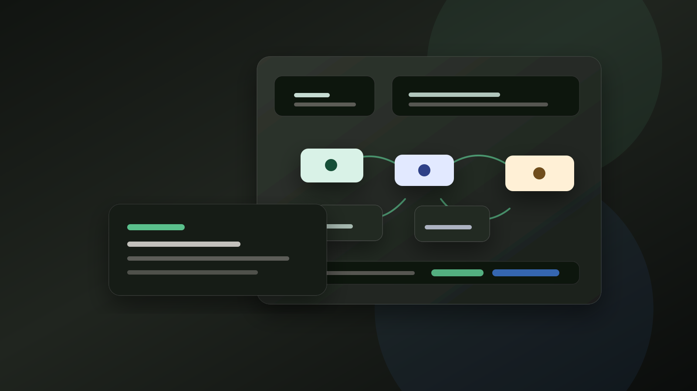

Показываем точку потери денег
Смотрим цели клиента, текущую воронку, объёмы трафика и показываем, где теряются заявки.

Manychat · BotHelp · Keitaro · подписка
Мы строим клиенту бота, воронку и аналитику, а дальше ведём проект по подписке: правки, отчёты, улучшения, новые сценарии и апсейлы.
Бизнес-модель
Клиент не покупает один бот и до свидания. Он получает постоянную команду на воронки, сценарии, правки, отчёты и рост конверсии.
Смотрим цели клиента, текущую воронку, объёмы трафика и показываем, где теряются заявки.
Клиент видит рабочую логику прямо в разговоре и быстрее понимает ценность.
Показываем конверсии, диалоги, сделанные правки и следующую гипотезу.
Досрочное расторжение: залог не возвращается, а стоимость разработки оплачивается по прайсу. Правки входят в подписку, новые сценарии продаются как апсейл.
Тарифные планы
Три уровня закрывают разный объём: от простого бота для малого бизнеса до мультиплатформенной связки с Keitaro, CRM и A/B-тестами.
Малый бизнес, 1 бот, простые сценарии: запись, FAQ, заявки.
Средний бизнес, воронки, интеграция с Keitaro и аналитика.
Крупные проекты, несколько воронок, арбитраж, CRM и офферы.
Прайс разовых работ
Разовые работы помогают зайти в проект, показать экспертизу и позже перевести клиента на сопровождение.
Итоговая цена фиксируется после брифа. От - стартовая точка разговора: финальный чек зависит от объёма, платформы, интеграций и срочности.
Экономика
Модель держится на повторяемой подписке: вы продаёте не только сборку, а постоянную операционную ценность.
2 клиента Pro. При заходе ещё двух - $1600/мес.
2 клиента Pro × 3 месяца подписки.
Плюс $2 400 стартового залога.
Точка безубыточности - 2-3 клиента Pro. Они закрывают платформы, инструменты и связь на ~$100-200/мес. Всё сверху - прибыль.
Комфортный потолок без найма: около 6 Basic, 4 Pro или 2 Agency одновременно.
Созвоны, аудит, закрытие сделок, ТЗ, сценарии, кейсы и отчёты.
Разработка ботов, подключение Keitaro, интеграции, API и обновления.
Рост и продажи
Кейсы, партнёрки, холодный охват и понятные поводы расширять подписку.
3 клиента Pro + $3 600 залога.
6 клиентов Pro.
2 Agency + 4 Pro + 3 Basic.
| Расширение подписки | Переход с Basic на Pro без новых продаж. |
|---|---|
| Дополнительный бот | Второй проект клиента - отдельный договор или надбавка +30%. |
| Keitaro-сопровождение | Офферы, трекинг, отчёты - отдельная строка в счёте. |
| Трафик под ключ | Партнёрство с арбитражниками - комиссия 10-20% от бюджета. |
Залог не возвращается, стоимость разработки прописана в договоре.
Правка - изменение существующего сценария. Новый сценарий - отдельная задача.
Предоплата за следующий месяц, задержка 5+ дней - пауза в поддержке.
2-3 первых клиента, договор, шаблоны, отзывы и скрины результатов.
Telegram-канал с кейсами, первые реферальные клиенты.
Agency-тариф для арбитражников, партнёрская сеть.
Анализ LTV, повышение цен новым клиентам на 15-20%.
Заявка
Оставьте короткий бриф. Мы оценим цель, платформу, объём сценариев, трафик и предложим формат.